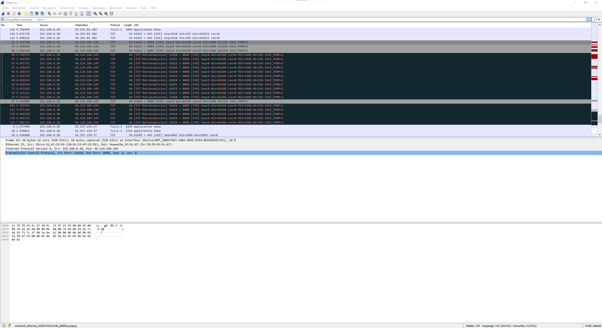

{kind=link}
{kind=link}
{kind=link}
{kind=link}
{kind=link}
{kind=link}
{kind=link}
{kind=link}
Ich habe das idente Problem, mein Heimsystem ist nur mit dem B525 Router erreichbar, jedoch spackt der CPE Pro 2.
Ich habe mit der Hotline telefoniert, die meinten sie schauen sichs an und werden mich kontaktieren... bin mal gespannt

Guten Abend,
Ich versuche einen kleinen privaten Server aufzubauen auf dem ich mit Freunden zum Beispiel minecraft oder andere spiele und eine Website erstellen kann.
Das ganze funktioniert lokal auch ohne Probleme, nur kann ich nicht von außerhalb des Netzwerkes darauf zugreifen.
Ich habe die verwendeten Ports als virtuelle Server angegeben und versuche über die WAN IP Adresse darauf zuzugreifen.
APN habe ich auf business.gprsinternet gestellt und meinem Gerät sogar eine fixe interne IP Adresse zugewiesen. Langsam gehen mir die Ideen aus, wie ich das Ganze zum Laufen bringen könnte.
ich hab noch ein paar screenshots gemacht vielleicht helfen die weiter.
mit freundlichen Grüßen
Sebastian
Bearbeitet von SebastianH
Der erste Klassiker wäre die Windows Firewall, der zweite fehlendes NAT Loopback.
Um zweitens zu testen, versuche einmal von außerhalb deines Netzwerkes auf den Server zuzugreifen. Z.B. über das Smartphone.
vor 5 Minuten schrieb IT-Freak:Der erste Klassiker wäre die Windows Firewall, der zweite fehlendes NAT Loopback.
Um zweitens zu testen, versuche einmal von außerhalb deines Netzwerkes auf den Server zuzugreifen. Z.B. über das Smartphone.
Bei der Firewall lasse ich die verwendeten Ports durch.
Wenn ich versuche mich vom Smartphone aus zu verbinden, bekomme ich die Fehlermeldung "ERR_CONNECTION_TIMED_OUT"
beides ohne Erfolg?
Dann sieh dir einmal den Traffic auf deinem PC mit Wireshark an?
War das Smartphone wirklich nicht mit dem WLAN verbunden?
vor 21 Minuten schrieb IT-Freak:Dann sieh dir einmal den Traffic auf deinem PC mit Wireshark an?
War das Smartphone wirklich nicht mit dem WLAN verbunden?
Ich kenne mich mit Wireshark leider nicht wirklich aus, aber ich habe mal einen screenshot davon gemacht und die Adresse gefunden. Es ist schwarz hinterlegt, das ist glaub ich kein gutes Zeichen :D.
Ich weiß nur leider echt nicht was oder ob ich da was zensieren soll. ich vertraue einfach mal auf die magenta community und zensiere nichts. Die ip hat sich ohnehin heute schon gefühlt 10 mal geändert. 
Nein mit dem Handy habe ich mit deaktiviertem WLAN und aktivierten mobilen Daten versucht auf die öffentliche IP zuzugreifen. Das hat nicht funktioniert.
Stammt der Screenshot von Wireshark von dem selben PC wo der Dienst läuft?
Wenn ja, dann passen die IPs nicht mit dem Screenshot vom Router zusammen.
Wireshark -> 192.168.8.20
Router -> 192.168.8.10
vor 52 Minuten schrieb IT-Freak:Stammt der Screenshot von Wireshark von dem selben PC wo der Dienst läuft?
Wenn ja, dann passen die IPs nicht mit dem Screenshot vom Router zusammen.
Wireshark -> 192.168.8.20
Router -> 192.168.8.10
Achso nein, der screenshot war von einem anderen PC der auch im Netzwerk war. hier ein screenshot vom Laptop auf dem der Server läuft. Wenn ich mich über localhost verbinde funktioniert es, mit der öffentlichen ip nicht.
192.168.8.10 ist mein Laptop auf dem der Server läuft
192.168.8.20 ist der andere PC mit dem ich unter anderem versuche mich zu verbinden
Welche Router hast du, mit welcher Firmware?
Wie lange ist der schon in verwendung?
Seit 3 Tagen bin ich bei Magenta und habe den HUAWEI 5G CPE Pro 2 bekommen.
Hardware-Version: WL1H122M
Software-Version: 10.0.5.13(H612SP1C1217)
Weboberflächen-Version: WEBUI 10.0.5.1(W2SP4C1217)
Ich kann da keinen Fehler erkennen. Wenn zufällig noch ein anderer Router herum liegt, dann versuche es einmal damit.
vor 1 Stunde schrieb IT-Freak:Ich kann da keinen Fehler erkennen. Wenn zufällig noch ein anderer Router herum liegt, dann versuche es einmal damit.
hab ich auch schon leider ohne Erfolg. Deshalb glaube ich dass ich irgendwo einen Fehler gemacht habe aber ich weiß nicht wo oder was... ich bin verschiedenen Anleitungen gefolgt und hab es bis jetzt nicht zum laufen gebracht.
Ich habe exakt dasselbe Problem. Alles lt. Anleitungen eingestellt, APN business.gprsinternet, Virtuelle Server eingetragen, ebenfalls eine 46.124.x.x IP Adresse usw. aber ich bekomme von extern keine Verbindung zusammen. Mit dem B535 Modem funktioniert es mit den Einstellungen, mit dem Huawai CPE Pro 2 mit derselben Firmware Version wie oben von SebastianH nicht.
Bearbeitet von revmal
Ich habe das idente Problem, mein Heimsystem ist nur mit dem B525 Router erreichbar, jedoch spackt der CPE Pro 2.
Ich habe mit der Hotline telefoniert, die meinten sie schauen sichs an und werden mich kontaktieren... bin mal gespannt

Am 13.8.2020 um 11:26 schrieb Fi Sh:Ich habe das idente Problem, mein Heimsystem ist nur mit dem B525 Router erreichbar, jedoch spackt der CPE Pro 2.
Ich habe mit der Hotline telefoniert, die meinten sie schauen sichs an und werden mich kontaktieren... bin mal gespannt

Ich hab leider auch noch keine Lösung. Sag bitte Bescheid wenn du eine Lösung hast
Was ich sagen ist, der Support bei Huawei meinte, die Basissoftware mit welchen die Modems ausgeliefert werden, verfügen über kein Portforwarding. D.h. es liegt jetzt an Magenta dies korrekt umzusetzen.
Bearbeitet von Fi ShIch hab auch den Bridge Mode probiert, aber da bekomme ich keine IP Adresse am Router hinter dem Huawai. Aus dem Modus werde ich auch nicht schlau ...
Seit heute funktioniert Portwarding bei mir ohne Problem. Ich habe weder eine neue Firmware noch ein etwas anderes getan.
Der Support hat mir auch noch nicht geantwortet, jedenfalls läuft alles wie es soll mit dem CPE5pro im 5G Netz.
Irgendwer hat irgendwas bei Magenta gemacht, aber keiner verrät etwas.
Jetzt wäre es nur noch nett zu wissen, warum die Verbindung jedentag des öfteren einfach abkackt.
ZitatWAN connection INTERNET_R_UMTS1:IPv4 connected
2020-08-26 09:28:19
WAN connection INTERNET_R_UMTS1:IPv4 disconnected
2020-08-26 09:28:15
WAN connection INTERNET_R_UMTS1:IPv4 connected
2020-08-26 07:16:16
WAN connection INTERNET_R_UMTS1:IPv4 disconnected
2020-08-26 07:16:12
WAN connection INTERNET_R_UMTS1:IPv4 connected
2020-08-26 07:16:02
WAN connection INTERNET_R_UMTS1:IPv4 disconnected
2020-08-26 07:15:59
WAN connection INTERNET_R_UMTS1:IPv4 connected
2020-08-26 00:28:19
WAN connection INTERNET_R_UMTS1:IPv4 disconnected
2020-08-26 00:28:15
WAN connection INTERNET_R_UMTS1:IPv4 connected
2020-08-25 08:32:56
WAN connection INTERNET_R_UMTS1:IPv4 disconnected
2020-08-25 08:32:15
WAN connection INTERNET_R_UMTS1:IPv4 connected
2020-08-25 08:31:36
WAN connection INTERNET_R_UMTS1:IPv4 disconnected
2020-08-25 08:31:33
WAN connection INTERNET_R_UMTS1:IPv4 connected
2020-08-25 08:31:19
WAN connection INTERNET_R_UMTS1:IPv4 disconnected
2020-08-24 21:27:53
WAN connection INTERNET_R_UMTS1:IPv4 connected
2020-08-24 22:27:48
WAN connection INTERNET_R_UMTS1:IPv4 disconnected
WAN connection INTERNET_R_UMTS1:IPv4 connected
2020-08-24 21:59:54
WAN connection INTERNET_R_UMTS1:IPv4 disconnected
2020-08-24 19:42:41
WAN connection INTERNET_R_UMTS1:IPv4 connected
2020-08-24 20:42:35
WAN connection INTERNET_R_UMTS1:IPv4 disconnected
2020-08-24 19:20:39
WAN connection INTERNET_R_UMTS1:IPv4 connected
2020-08-24 20:20:33
WAN connection INTERNET_R_UMTS1:IPv4 disconnected
2020-08-24 17:07:23
WAN connection INTERNET_R_UMTS1:IPv4 connected
2020-08-24 17:07:18
WAN connection INTERNET_R_UMTS1:IPv4 failed
2020-08-24 17:07:07
WAN connection INTERNET_R_UMTS1:IPv4 disconnected
2020-08-24 09:07:29
WAN connection INTERNET_R_UMTS1:IPv4 disconnected
2020-08-24 07:22:53
WAN connection INTERNET_R_UMTS1:IPv4 connected
2020-08-24 08:22:46
WAN connection INTERNET_R_UMTS1:IPv4 connected
2020-08-24 08:12:33
WAN connection INTERNET_R_UMTS1:IPv4 disconnected
2020-08-24 07:12:32
WAN connection INTERNET_R_UMTS1:IPv4 connected
2020-08-24 08:12:26
WAN connection INTERNET_R_UMTS1:IPv4 disconnected
2020-08-24 02:51:14
WAN connection INTERNET_R_UMTS1:IPv4 connected
2020-08-24 02:51:10
WAN connection INTERNET_R_UMTS1:IPv4 disconnected
2020-08-24 02:01:10
WAN connection INTERNET_R_UMTS1:IPv4 connected
2020-08-24 01:49:05
WAN connection INTERNET_R_UMTS1:IPv4 disconnected
2020-08-23 22:55:14
WAN connection INTERNET_R_UMTS1:IPv4 connected
2020-08-23 22:55:10
WAN connection INTERNET_R_UMTS1:IPv4 disconnected
2020-08-23 22:20:00
WAN connection INTERNET_R_UMTS1:IPv4 connected
2020-08-23 22:19:51
WAN connection INTERNET_R_UMTS1:IPv4 disconnected
2020-08-23 21:16:12
WAN connection INTERNET_R_UMTS1:IPv4 connected
2020-08-23 22:16:06
WAN connection INTERNET_R_UMTS1:IPv4 disconnected
2020-08-23 22:04:16
WAN connection INTERNET_R_UMTS1:IPv4 connected
2020-08-23 22:04:08
WAN connection INTERNET_R_UMTS1:IPv4 disconnected
2020-08-23 21:57:09
WAN connection INTERNET_R_UMTS1:IPv4 connected
2020-08-23 21:57:01
WAN connection INTERNET_R_UMTS1:IPv4 disconnected
2020-08-23 18:06:21
WAN connection INTERNET_R_UMTS1:IPv4 connected
2020-08-23 17:53:51
WAN connection INTERNET_R_UMTS1:IPv4 disconnected
2020-08-23 11:02:54
WAN connection INTERNET_R_UMTS1:IPv4 connected
2020-08-23 11:50:46
WAN connection INTERNET_R_UMTS1:IPv4 disconnected
2020-08-23 11:25:24
Bearbeitet von Fi Sh
Heute umgesteckt, funktioniert bei mir auch mit 4G.
Es könnte ein Firmware Update oder eine Umstellung im Netz gewesen sein.
Es ist Mal wo eine Meldung aufgetaucht, dass es im 5G Netz ein Problem mit öffentlichen IPs gab/gibt. Vielleicht hat es damit was zu tun.
Ich habe leider auch dasselbe Problem. Magenta kann mir leider auch nicht helfen.
Guten Abend,
ich habe das Problem immer noch.
Ich habe schon alles mögliche Versucht - ohne Erfolg.
Gibt es noch irgendwelche verrückten Vorschläge die ich versuchen könnte um meine Ports zu öffnen?
Danke und schönes Wochenende
Hallo!
Bei Magenta zahlt man die Servicepauschale jährlich leider nicht für einen guten Service.
Die Port Freigabe funktioniert teilweise bei mir. Hab immer wieder Ausfälle. Liegt whs am APN.
Die meisten hier werden wahrscheinlich ein LoopBack Problem haben. Die Ports sind über externe Netzwerke erreichbar aber nicht im eigenen. Da das nicht gerootet wir. (Kein LoopBack). Kann also nur von extern erreicht werden mit der externen IP. Und intern nur mit der internen IP.
hoffe dass hilft einige.
Mit freundlichen Grüßen
MK